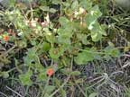
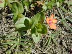
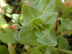
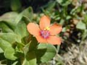
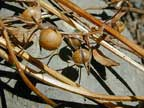

Scarlet pimpernel
Anagallis arvensis
Other names
pimpernel, blue pimpernel
Description
A 10 30 cm long plant in the family Primulaceae, A. arvensis is a prostrate to suberect annual herb with branching four angled stems, slender roots and scattered glandular hairs. Leaves up to 20 mm long, bright green, opposite, stalkless and are oval but pointed at the tip. Flowers brick red or pink, rarely blue, carried on slender stalks, 10 15mm across and usually have a star like appearance due to the presence of five minutely toothed lobes. They appear mid to late summer, closing at night and on cloudy days. Fruit brown, three angled capsule, about 5 mm diameter, which opens by means of transverse slits.
Similar plants
Chickweed has similar leaves, but small white flowers. Not toxic (in fact, nutritious). Creeping mallow has similar flowers.
Distribution
Scarlet pimpernel is a native of Britain that is now found as a weed in most countries. It is common in cultivated land in both the North and South Islands, as well as in gardens, wasteland and roadsides.
Toxin
A glycosidal saponin has been isolated from the aerial parts of the plant and a saponin (cyclamin) from the roots. An acrid volatile oil has also been isolated. By causing gastrointestinal irritation, saponin increases systemic absorption and severe toxicity. The renal tubules are specifically destroyed by the plant toxin, without a significant affect on other organs occurring. All parts are said to be toxic and to have a narcotic affect, but the plant is reputedly unpalatable. However, studies suggest that the palatability and toxicity increases after extraordinarily heavy rains in summer, due to exuberant growth of the plant. Although the exact conditions under which this plant is nephrotoxic for stock have yet to be defined, it should still be regarded as a potential source of toxicity.
Species affected
Sheep, cattle, horses, mules, dogs, rabbits and birds. Conflicting reports exist as to whether it is toxic to poultry. Humans can suffer dermatitis as a result of contact with the leaves. Has been recorded poisoning of sheep, cattle and horses in Australia and suspected poisoning of sheep in New Zealand.
Clinical signs acute
Scarlet pimpernel consistently causes intestinal irritation and effects on the nervous system. Affected animals have a slow, stiff, staggering gait, are weak and listless and both appetite and rumination are suppressed. Constipation, followed by blood stained diarrhoea and dark coloured froth in the urine may also occur as may dyspnoea and a weak pulse. Blood changes are not seen until 24 hours before death (at which time clinical signs of illness are evident) but may include high blood urea nitrogen and plasma magnesium levels, and lowered plasma calcium levels. A rapid drop in temperature also occurs at the terminal stage, remaining within normal limits before this.
Clinical signs chronic
Post mortem signs
Coagulative necrosis and renal cortical intratubular haemorrhage are the most conspicuous lesions seen. Widespread oedema is seen, namely in the subcutaneous tissue (especially along the ventral abdominal wall), submucosa of the abomasum, mesentery, lungs, and is especially severe perirenally. Congestion of mucous membranes, liver, lungs, kidneys and stomach is also apparent and the kidneys appear pale tan, and swollen with severe nephrosis being indicated by numerous disseminated petechial haemorrhages within the cortex. Petechial and ecchymotic haemorrhages may also appear in the subcutis and beneath the epicardium. Histopathology reveals evidence of a severe toxic nephrosis. Glomeruli appear relatively unaffected but there is severe coagulative necrosis of the proximal convoluted tubules, and relatively severe fatty change in the distal ones. The renal medulla appears relatively unaffected.
Diagnosis
History and clinical signs are suggestive, with post mortem examination revealing the characteristic signs of a toxic nephrosis.
Differential diagnosis
Other Primulaceae; Cyclamen species. Cases which were later confirmed as A. arvensis poisoning were originally diagnosed as oxalate poisoning, mycotoxicoses and nephrosis of undetermined aetiology. Other differentials include poisoning by mercurial salts, lead, copper, arsenic, bismuth, cadmium, superphosphate fertilizer (due to sodium fluoride content). Bacterial toxins, poisoning by Quercus species or drugs such as aminoglycosides, tetracyclines, amphotericin B, monensin and sulphonamides should also be considered.
Treatment
Symptomatic and supportive. One report states that horses and mules exhibited a slow, but complete, recovery when treated with vitamins, iron and a change of straw.
Prognosis
Variable depending on amount ingested. Coma and death usually occur 24 36 hours after the first signs appear, although it would seem that the plant is only this toxic after certain environmental conditions have occurred (ie unusually heavy rains in summer). How long it takes for fatal kidney damage to develop is dependent on the dose of toxic material ingested.
Prevention
References
Conner H.E. The Poisonous Plants In New Zealand. 1992. GP Publications Ltd, Wellington
Cooper M R, Johnson A W. Poisonous Plants and Fungi in Britan: Animals and Human Poisoning. Her Majesty’s Stationary Office. London. 1998
Parton K, Bruere A.N. and Chambers J.P. Veterinary Clinical Toxicology, 2nd ed. 2001. Veterinary Continuing Education Publication No. 208
Rothwell, J. T. and Marshall, D. J. 1986. Australian Veterinary Journal 63: 316
Schneider, D. J. 1978. Journal of the South African Veterinary Association 49:321 4
|  plant |
 |
|
|
 |
 |
|
|
 |
||
|
|
|
|